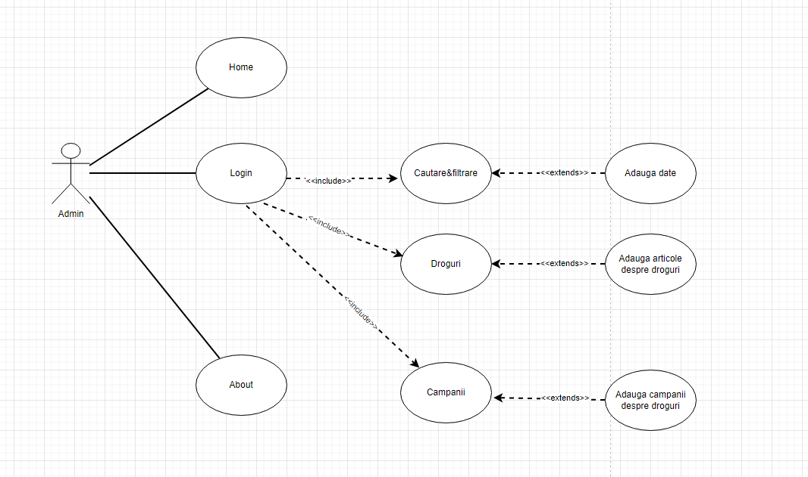
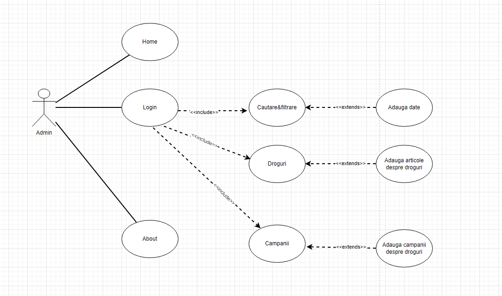
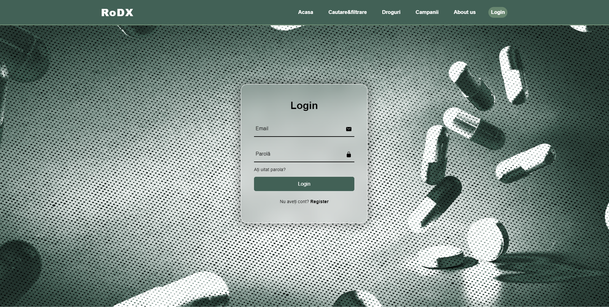
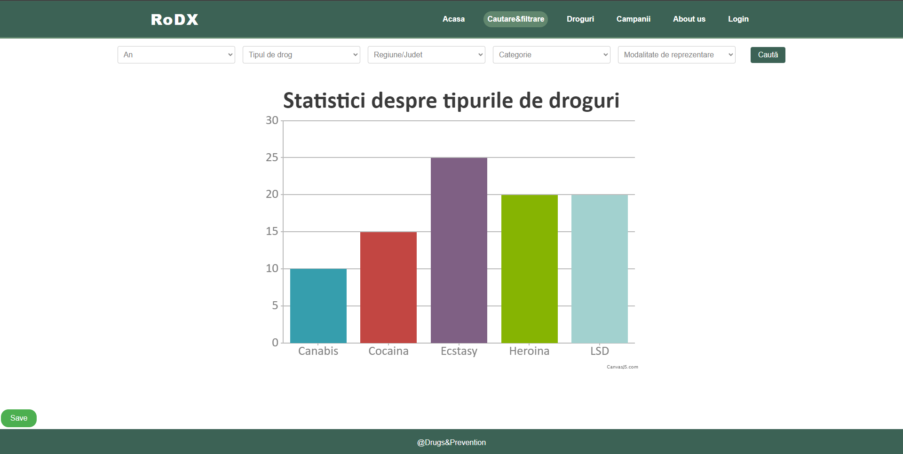

RoDX (Romanian Drug Explorer)
Cuprins
- Autori
- 1. Introducere
- 2. Descriere generală
- 3. Cerințele interfaței externe.
- 4. Funcționalități de sistem
- 5. Cerințe nefuncționale
1. Introducere
1.1 Motivație
Consumul de droguri afectează nu doar sănătatea individuală, ci și societatea în ansamblu. Problemele asociate cu drogurile includ dependența, bolile transmisibile, supradozele și problemele de sănătate mintală. Prin analiza datelor disponibile, RoDX urmărește să evidențieze aceste probleme și să contribuie la eforturile de prevenire și reducere a impactului consumului de droguri.Scopul acestui instrument este de a ajuta utilizatorii să înțeleagă mai bine evoluția și tendințele consumului de droguri în țară, precum și impactul acestuia asupra infracțiunilor, sănătății și campaniilor de prevenire.
1.2 Convenție de scriere
- Acest document urmează standardul IEEE Software Requirements Specification și Scholarly HTML.
1.3 Portretul utilizatorului
Audiența acestui site este una diversa aceasta fiind constituită de urmatoarele categorii de oameni: cetățenii interesați de situația drogurilor în România și de evoluția consumului acestora, studenți, cercetători sau profesioniști care studiază sau lucrează în domeniul sănătății, al politicilor publice sau al științelor sociale și care au nevoie de date statistice și de analize relevante pentru munca lor, jurnaliști care scriu despre problemele sociale și de sănătate publică din România și care au nevoie de date și informații actualizate, autorități și organizații guvernamentale și neguvernamentale care lucrează în domeniul prevenirii și combaterii consumului de droguri în România și care au nevoie de date și analize pentru a-și orienta politicile și acțiunile în consecință.
1.4 Scopul produsului
Scopul acestui produs este facilitarea vizualizării informațiilor cu privire la consumul de droguri. Instrumentul va fi creat pe baza unui API REST/GraphQL propriu. Statisticile și vizualizările vor fi generate în minim 3 maniere. Acestea vor putea fi exportate în formatele PNG și SVG. Căutările multi-criteriale și rapoartele aferente generate vor fi expuse ca documente HTML și în format CSV.
1.5 Diagrame Use-Case
Mai jos se află diagramele use-case pentru utilizator și pentru admin.
 

1.6 Referințe
- Buraga Sabin-Corneliu, Site-ul Tehnologii Web, FII UAIC.
- H Rick. IEEE-Template. GitHub
- Berjon Robin. Ballesteros Sebastien. What is Scholarly HTML?
2. Descriere generală
2.1 Perspectiva produsului
Prin crearea acestui instrument, se urmărește îmbunătățirea înțelegerii situației drogurilor în România, precum și ajutarea autorităților .2.2 Funcțiile produsului
Fiecare utilizator are acces la următoarele opțiuni:- Creează un cont.
- Autentificare.
- Informarea cu privire la tipurile de droguri și efectele lor, posibilitatea de vizualizare a statisticilor privind drogul respectiv
- Vizualizarea campaniilor anti-drog.
- Căutarea multi-criterială
-
Generarea statisticilor cu forme de vizualizare precum:
- Line chart
- Bar chart
- Pie chart
- Generare de redări cartografice
-
Exportarea informațiilor după urmatoarele formate:
- CSV
- SVG
- PNG
- Salvarea statisticilor într-un istoric
2.3 Clase de utilizatori și caracteristici
2.3.1 Utilizatori principali
- Utilizatorii autentificați pot fi:
- Cetățeni interesați de situația drogurilor in Romania
- Studenți, cercetători sau profesioniști care studiază sau lucrează în domeniul sănătății
- Jurnaliști care scriu despre problemele sociale.
- Publicul larg care dorește să se informeze despre situația consumului de droguri în România
2.3.2 Caracteristici
- Utilizatori autentificați au acces la toate funcționalitățile site-ului.
- Utilizatorii neautentificați posibilitatea de a creea un cont și fără acesta nu au dreptul de a exporta date legate de consumul drogurilor.
2.4 Mediul de funcționare
Instrumentul de vizualizare este o aplicație web care poate fi folosită pe orice device care suporă HTML5, CSS și JavaScript(responsive).
2.5 Constrângeri de design și implementare.
- Generarea de statistici și vizualizari de date.
- Utilizarea unui API REST/GraphQL propiu.
- Utilizarea HTML5, CSS și JavaScript.
- Exportarea datelor in format CSV, PNG și SVG.
3. Cerințele interfaței externe.
3.1 Interfața utilizatorului
- Pagina de autentificare
-
- Parolă
- Login
- Register
- Ați uitat parola?

- Pagina de înregistrare
-
- Nume de utilizator
- Parolă
- Confirmați parola
- Register
- Aveți deja cont? Login
- Home Page
-
- Meniu
- Descrierea aplicației
- Prezentarea scopului
- Poze descriptive
- Cautare&filtrare
-
- An
- Tipul de drog
- Regiune/Județ
- Categorie
- Modalitate de reprezentare
- Caută
- Salvare
- Export

- Droguri
-
- Imagini
- Informații despre droguri


- Postere
- Listă de campanii
- Articole descriptive despre fiecare campanie
- Descrierea fiecărui creator

3.2 Interfață Software
3.3 Interfață de comunicare
Utilizarea aplicației necesită conexiunea la internet.Pentru creearea conturilor este necesară completarea unui formular.Completarea presupune introducerea unui nume de utilizator, a unei adrese de email și o parolă, aceasta din urmă va fi criptată folosind un algoritm corespunzător.
4. Funcționalități de sistem
4.1 Management-ul contului
4.1.1 Descriere
Un utilizator se poate înregistra prin intermediul unui nume, email și parolă.După ce acesta s-a înregistrat acesta se poate autentifica in aplicație.După ce acesta s-a autentificat acesta poate să exporte date sau să salveze aceste date într-un istoric.Aceasta reprezintă o opțiune de prioritate medie.4.1.2 Utilizare
- După înregistrare utilizatorul figurează în baza de date, iar sistem îi permite să beneficieaze de opțiunile aplicației.
4.1.3 Condiții de funcționare
- Utilizatorul trebuie să introducă date valide.
4.2 Filtrarea multi-criterială
4.2.1 Descriere
După ce utilizatorul s-a autentificat, acesta poate accesa pagina de Cautare&filtrare unde se află urmatoarele campuri după care poate să-și furnizeze statistice referitoare la consumul și arestul drogurilor din România:4.2.2 Utilizare
- Utilizatorul completează câmpurile.
- Apasă pe butonul de căutare.
- Alege dacă dorește să-și salveze/exporteze datele primite.
4.2.3 Condiții de funcționare
- Utilizatorul trebuie să fie autentificat.
4.3 Creearea statisticilor
4.3.1 Descriere
- Constă în informațiile extrase din baza de date, în urma filtrelor completate de utilizator.Aceasta reprezintă o opțiune de prioritate ridicată.
4.3.2 Utilizare
- Userul filtrează informațiile in funcție de an, tipul de drog, județ, categorie și modalitatea de reprezentare, iar pe baza acestora primește informațiile corespunzatoare.
4.3.3 Condiții de funcționare
- Userul trebuie să fie autentificat pentru a genera/exporta date.
4.4 Salvare statisticilor
4.4.1 Descriere
După ce a completat filtrele, utilizatorul are posibilitatea de a salva statisiticile furnizate într-un istoric.4.4.2 Utilizare
- Acesta apasă pe butonul de save care îi salvează statisticile în contul instoricul contului său.
4.4.3 Condiții de funcționare
- Userul trebuie să fie autentificat pentru a salva date.
- Userul trebuie să genereze date.
4.5 Exportarea statisticilor
4.5.1 Descriere
După ce a completat filtrele, utilizatorul are posibilitatea de a exporta statisiticile sub un anumit format.4.5.2 Utilizare
- Acesta apasă pe butonul de export care îi oferă posibilitatea de a exporta statisticile în mai multe formaturi.
4.5.3 Condiții de funcționare
- Userul trebuie să fie autentificat pentru a salva date.
- Userul trebuie să genereze date.
4.6 Autentificarea ca și administrator
4.6.1 Descriere
Administratorul se autentifică in aplicație și acesta are dreptul de a edita articole, adăuga date referitoare la consumul de droguri.4.6.2 Utilizare
- Acesta se autentifică pe cont și are acces la anumite opțiuni
4.6.3 Condiții de funcționare
- Administratorul trebuie să fie autentificat.
5. Cerințe nefuncționale
5.1 Cerințe de securitate
- Conturile utilizatorilor sunt protejate printr-un sistem de autentificare folosind criptarea bcrypt pentru parole și token-ul de acces, în scopul de a menține confidențialitatea și de a proteja datele lor. Alte măsuri de securitate luate includ prevenirea atacurilor de tip SQL-injection și blocarea mai multor cereri consecutive venite de la același utilizator, pentru a preveni încetinirea aplicației.
- Prevenirea atacurilor de tip cookie hijacking.
- Pentru autentificarea unui administrator va fi nevoie de un utilizator si o parola.
5.2 Security Requirements
Conturile utilizatorilor sunt protejate printr-un sistem de autentificare folosind criptarea bcrypt pentru parole și token-ul de acces, în scopul de a menține confidențialitatea și de a proteja datele lor. Alte măsuri de securitate luate includ prevenirea atacurilor de tip SQL-injection și blocarea mai multor cereri consecutive venite de la același utilizator, pentru a preveni încetinirea aplicației.
5.3 Atributele Calității Software
Aplicația pune la dispoziție utilizatorilor diverse functionalități cu diferite grade de complexitate în utilizare. Prin interfața oferită aplicația poate fi utilizată cu ușurință de către utilizatori obișnuiți și administratori. Utilizatorii obișnuiți trebuie să aibă cunosțințe minime de interepretare a graficelor și statisticilor puse la dispoziție.
- Asigurarea consistentei datelor din baza de date.
- Asigurarea consistentei datelor afisate/exportate in conformitate cu datele din baza de date.
Anexa A: Glosar
- CSV: Comma Separated Values
- HTML: Hypertext Markup Language
- CSS: Cascading Style Sheets
- SVG: Scalable Vector Graphics
- API: Application Programming Interface
- SQL: Structured Query Language
- REST: Representational state transfer
- JS: JavaScript